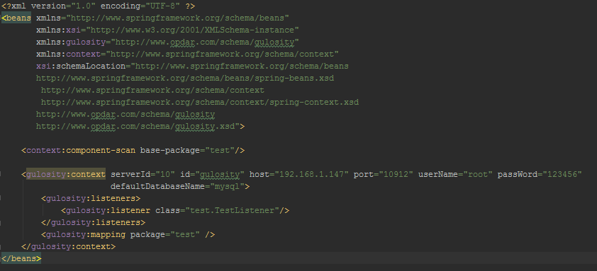
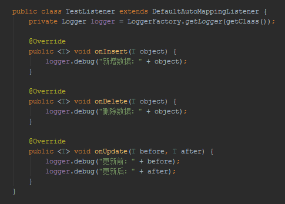

1.开启Mysql Binlog Replication.
GRANT REPLICATION SLAVE ON *.* to '账户名'@'主机' identified by '密码'
2.集成至项目
<dependency>
<groupId>com.opdar.gulosity</groupId>
<artifactId>gulosity-parse</artifactId>
<version>0.1</version>
</dependency>
3.Spring配置

4.实现Listener

Having trouble with Pages? Check out our documentation or contact support and we’ll help you sort it out.